Karpathy 的一条帖子，3 天拿下 4.3 万点赞、1200 万浏览，直接炸了。
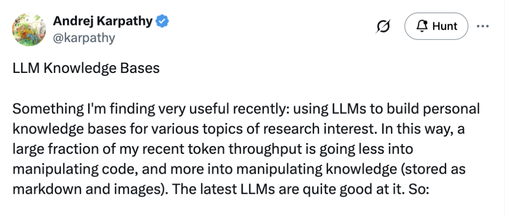
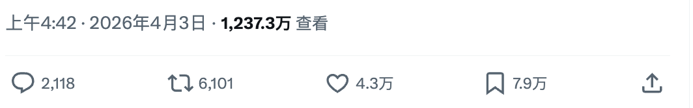
两天前，Karpathy 在 X 上发了一条长帖，标题是：LLM Knowledge Bases。
他说自己最近花在 LLM 上的 token，越来越少用来写代码了，更多是在「操控知识」。
“ 我最近发现了一个非常有用的东西：用 LLM 来为各种研究兴趣构建个人知识库。这样一来，我最近的 token 消耗中，有很大一部分不再是用来操控代码，而是用来操控知识（以 Markdown 和图片的形式存储）。
两天后，他把这套方法论写成了一份 gist 发到 GitHub 上，开源给所有人。
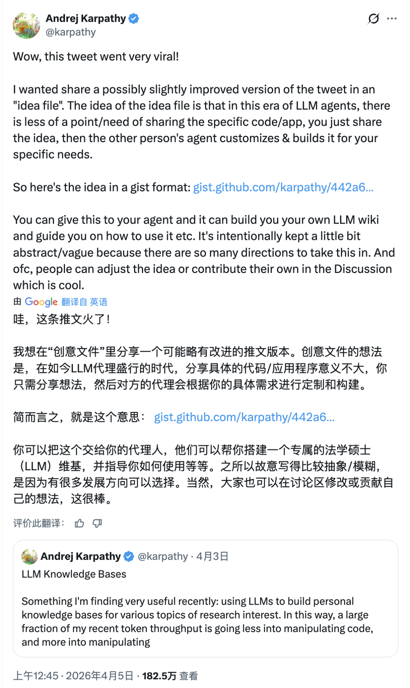
但这份开源，跟以往的不太一样。
01不是代码，是想法
Karpathy 这次开源的不是一个 repo，不是一个框架，甚至不是一段脚本。
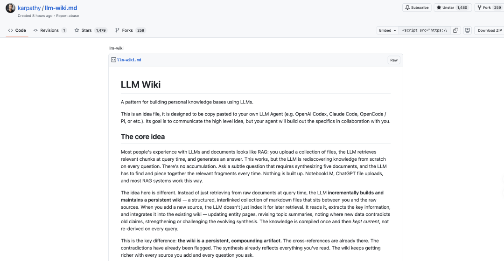
是一份……75 行的 Markdown 文件，他叫它 idea file。
Karpathy 说：
“ 在这个 LLM Agent 的时代，分享具体的代码或应用已经意义不大了。你只需要分享想法，然后对方的 Agent 会根据你的具体需求来定制和构建。
你可以把这份文件直接丢给 Claude Code、OpenAI Codex 或者任何你喜欢的 Agent，它就能帮你搭建出你自己的 LLM Wiki，并指导你怎么用。
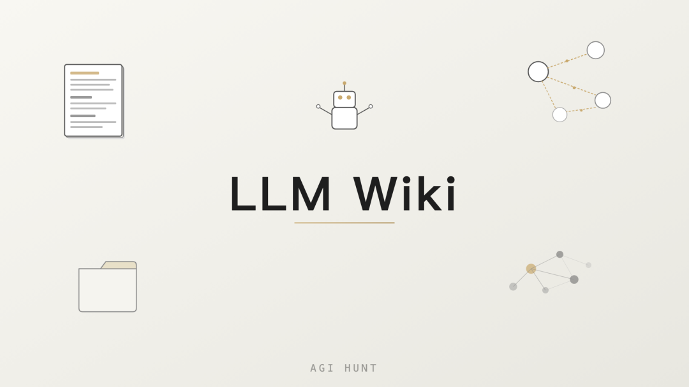
换句话说：开源的不再是代码，而是思路。
造词大师 Karpathy 还顺便又造了个新词。
有人在评论区回复他，他提到 Peter Steinberger 跟他说，以后 PR 应该叫 Prompt Request，而不是 Pull Request。因为 Agent 完全有能力自己实现大多数想法，没必要把你的想法用免费版 ChatGPT 写成一坨 vibe coding 的代码再提交。
02所以到底是啥
简单来说，Karpathy 搞了一套系统：让 LLM 帮你把乱七八糟的资料「编译」成一个结构清晰、互相链接的 Markdown Wiki。
传统的 RAG 大家都知道：你上传一堆文件，LLM 每次提问时去检索相关片段，然后生成答案。NotebookLM、ChatGPT 文件上传，基本都是这个思路。
问题在哪呢？每次提问，LLM 都在从头发现知识。没有积累。
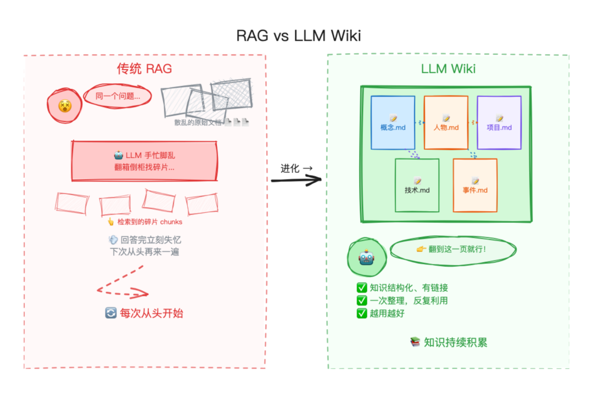
Karpathy 的做法不同。
他让 LLM 读完原始资料后，不只是建索引等着被查询，而是主动把关键信息提取出来，整合到一个持续维护的 Wiki 里：更新实体页面、修订主题摘要、标注新旧数据之间的矛盾、不断强化已有的综合分析。
知识被「编译」一次之后，就持续保鲜，而不是每次查询都重新推导。
这就像把你的研究资料交给一位全职的图书管理员，他不会忘记更新交叉引用，不会厌烦琐碎的整理工作，一次操作就能同时修改 15 个文件。
03三层架构
整个系统分三层： 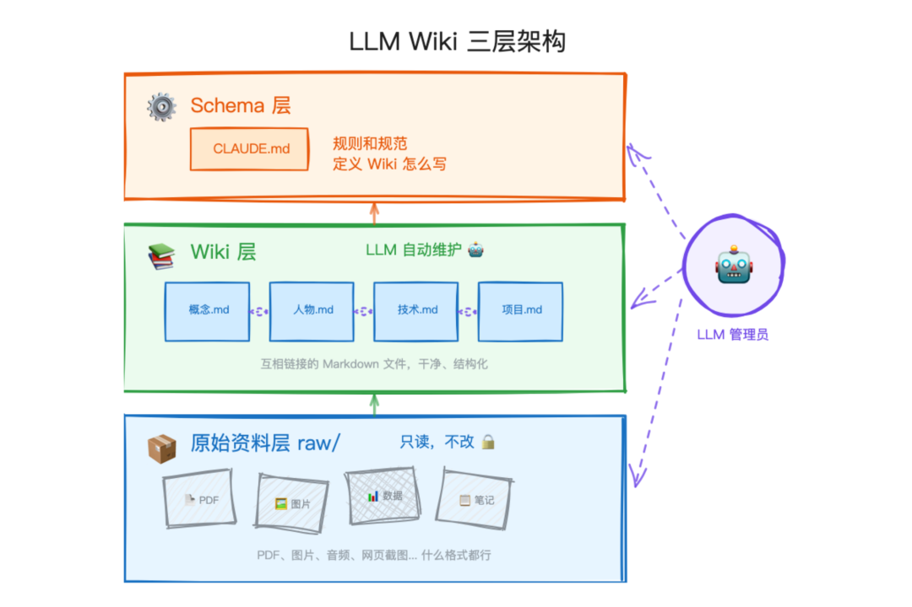
原始资料层，也就是 raw/ 目录。文章、论文、图片、数据集，统统往里扔。这一层是只读的，LLM 只看不改。
Wiki 层，一堆 LLM 生成的 Markdown 文件。摘要、实体页、概念页、对比分析、综述。全部由 LLM 自动创建和维护，你只负责阅读。
Schema 层，一个配置文件（比如 Claude Code 的 CLAUDE.md）。它告诉 LLM 这个 Wiki 怎么组织、遵循什么规范、遇到不同操作该走什么流程。这是把 LLM 从通用聊天机器人变成专业 Wiki 维护者的关键。
怎么跑
日常使用主要是三个操作：
灌入。把新资料丢进 raw/ 目录，告诉 LLM 去处理。LLM 读完之后会跟你讨论要点，写一页摘要，更新索引，然后跑去更新 Wiki 里所有相关的实体页和概念页。一份资料可能会触发 10 到 15 个页面的更新。
提问。向 Wiki 提问。LLM 会搜索相关页面，读完之后综合出一个带引用的回答。回答可以是 Markdown、对比表格、Marp 幻灯片、matplotlib 图表，各种格式都行。关键的一步是：好的回答可以被归档回 Wiki，变成新的页面。 你的每一次探索，都在给知识库「添砖加瓦」。
巡检。定期让 LLM 对 Wiki 做一次「体检」：找矛盾、补缺失、发现新的关联、标记需要深入研究的方向。LLM 还挺擅长给你出下一步的研究题目。
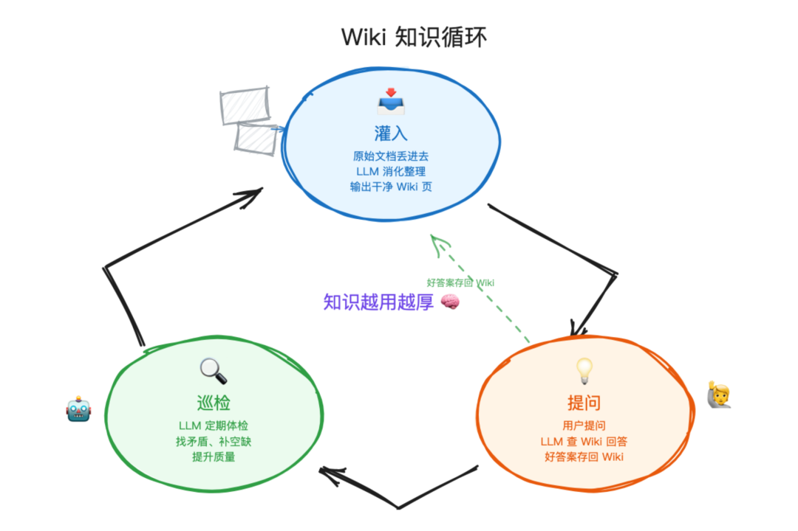
Karpathy 说自己平时就是一边开着 LLM Agent，一边开着 Obsidian。LLM 在对话中做编辑，他在 Obsidian 里实时看结果，点链接、翻图谱、读更新后的页面。
“ Obsidian 是 IDE，LLM 是程序员，Wiki 是代码库。
他在一个研究方向上积累了大约 100 篇文章、40 万字。本来以为得上花哨的 RAG 方案，结果……LLM 自己维护索引文件和文档摘要就够了，在这个规模下查什么都算顺畅。
05评论区
这条帖子的评论区也是相当热闹和优质，Karpathy 自己就回了几十条。
有人问怎么用它来读书。Karpathy 的建议是：用 epub 格式而不是 PDF，一章一章地喂给 LLM，让它边读边整理。
“ 别指望把一个 PDF 丢进去就让它总结，得「慢慢来」，一块一块地处理。当我分阶段做的时候，结果好得不得了，已经离不开了。
还有人问他底层用了什么技术栈。答案是：就是一个嵌套目录，里面是 .md 文件和 .png 图片，再加几个 .csv 和 .py，Schema 写在 AGENTS.md 里。
没有数据库，没有框架。
Karpathy 还补了一个操作细节：他目前是手动添加每一份资料的，一份一份来，全程在线参与。等 LLM「学会」了这个 Wiki 的模式之后，后面再加新文档就轻松了，只需要说一句「把这份新文档归档到我们的 Wiki：（路径）」就行。
Obsidian 的创始人 Steph Ango 也在评论区出现了，提出了一个叫「Contamination Mitigation」的概念：建议把个人的笔记库和 Agent 的工作区分开，让 Agent 在一个「乱一点的」空间里折腾，整理好的成果再搬回你的主库。Karpathy 对此表示认同，他的 raw/ 目录就是起这个作用的。
有人问他会不会出个视频教程。Karpathy 说：
06“ 我刚好也在想这个。
Farzapedia
Karpathy 帖子炸了之后两天，一个叫 Farza 的开发者就搞出了一个让人眼前一亮的实践。
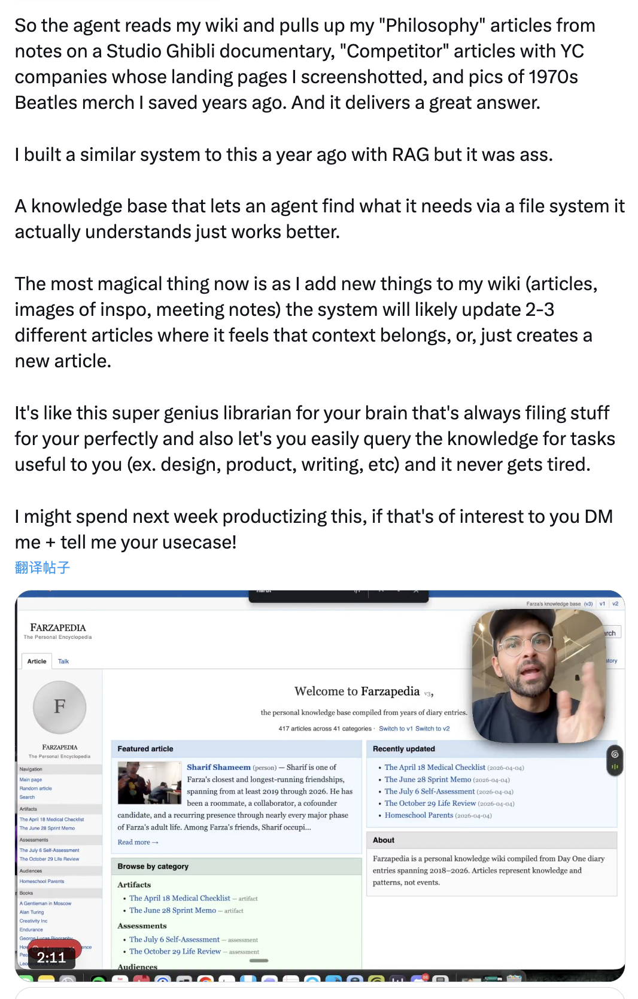
Farza 让 LLM 从他的 2500 条日记、Apple Notes 和一些 iMessage 对话中，生成了一个关于他自己的个人维基百科。
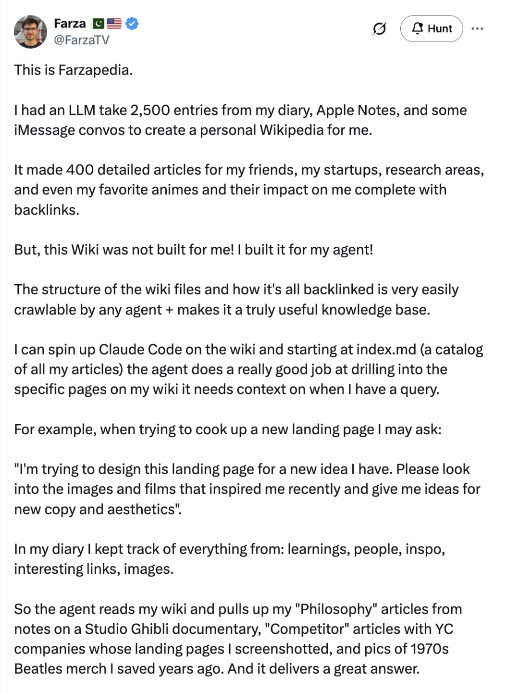
这个 Wiki 包含 400 篇详细文章，涵盖了他的朋友、创业项目、研究方向，甚至他最喜欢的动漫以及这些动漫对他的影响，全部带有反向链接。
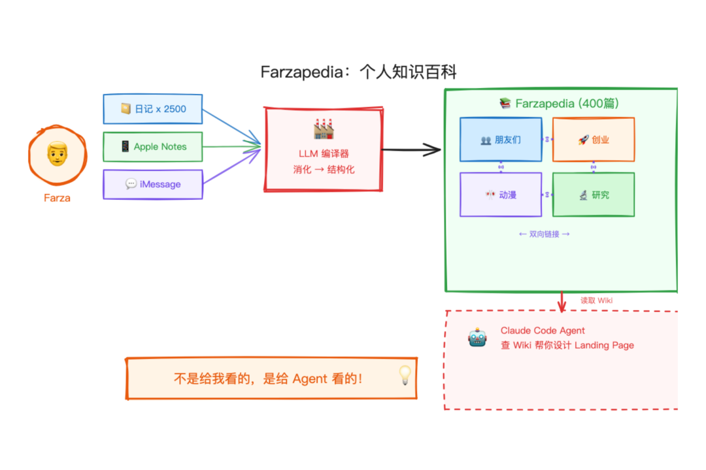
注意，关键在于：
“ 这个 Wiki 不是给我看的，是给我的 Agent 看的。
Wiki 的文件结构和反向链接对任何 Agent 来说都非常容易爬取。他可以在 Wiki 上启动 Claude Code，Agent 从 index.md 出发，就能精准定位到需要的页面。
举个例子：Farza 在设计新的落地页时，跟 Agent 说「看看最近启发我的图片和电影，给我一些文案和视觉风格的建议」。
Agent 就自己跑去翻他的 Wiki，拉出了吉卜力纪录片的笔记、YC 公司落地页的截图，甚至是他几年前保存的 1970 年代甲壳虫乐队周边的照片，然后给出了一个相当靠谱的回答。
Farza 说他一年前用 RAG 做过类似的系统，但效果一言难尽。而基于文件系统的知识库，Agent 天然就能理解，反而好用得多。
07Karpathy 点赞
Karpathy 看到 Farzapedia 之后专门发了一条帖子，列出了这种方式做 AI 个性化的四个优势：
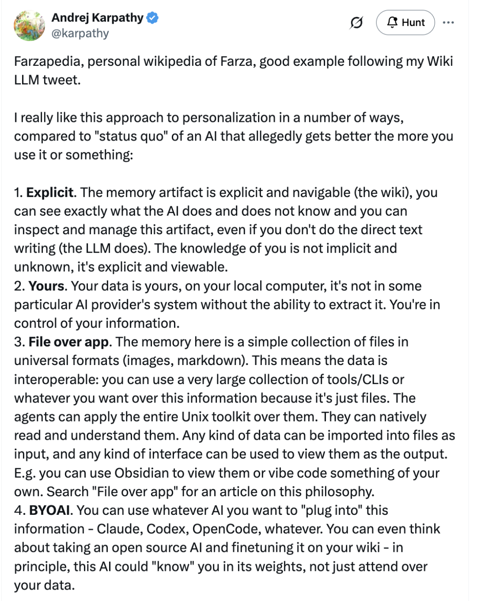
可见。 记忆不是藏在模型里面的黑箱。它就是一个 Wiki，你能看到 AI 知道什么、不知道什么，能检查、能管理。
你自己的。 数据在你本地电脑上，不在某个 AI 公司的系统里。你对自己的信息有完全的控制权。
文件优先。 知识库就是一堆通用格式的文件：Markdown 和图片。这意味着数据可以互操作，你可以用 Unix 工具链、任何 CLI 来处理它们。想用 Obsidian 看就用 Obsidian，想自己写个界面也行。
BYOAI（自带 AI）。 你可以用 Claude、Codex、OpenCode 或任何你喜欢的 AI 来接入这些数据。甚至可以考虑用开源模型在你的 Wiki 上做微调，让 AI 把关于你的知识「编进」模型权重里。
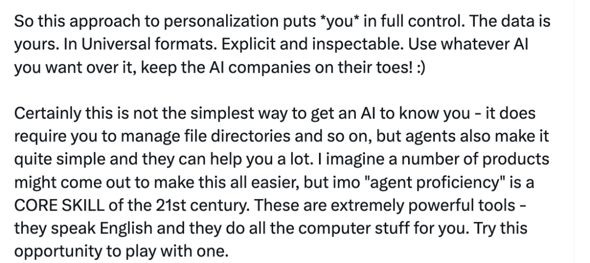
Karpathy 还总结道：
08“ 这种个性化方式把控制权完全交到你手上。数据是你的，格式是通用的，内容是可检查的。用哪个 AI 随你，让 AI 公司们卷起来吧。
一个 80 年前的梦
Karpathy 在 gist 里提到了一段 81 年前的往事。
1945 年，Vannevar Bush 提出了 Memex 的概念：一个私人的、经过整理的知识库，文档之间有关联性的「踪迹」相互连接。Bush 的愿景其实比后来的万维网更接近 Karpathy 现在做的事情：私密的、主动整理的、文档之间的连接和文档本身同样重要。
Bush 没能解决的问题是：谁来做维护？
81 年后……答案来了：LLM。
它不会忘记更新交叉引用，不会觉得整理工作无聊，一次操作就能触及几十个文件。Wiki 能持续保持更新，因为维护的成本趋近于零。
09从 vibe coding 到知识编译
回头看 Karpathy 这两年的轨迹，能看到一条清晰的演进线：
2025 年 2 月，他造了 vibe coding 这个词，意思是写代码的时候完全「跟着感觉走」，让 AI 写，自己不看。
2025 年底，他提出了 Agentic Engineering，用 AI Agent 来写代码，但加上了人类的监督和审查。
2026 年 4 月，LLM Knowledge Bases。这回 LLM 操控的……不再是代码，而是知识本身了。
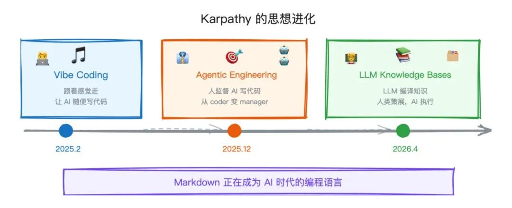
Markdown 正在成为 AI 时代的编程语言。
不管是指导 Agent 的 CLAUDE.md，驱动研究的 program.md，还是被编译成 Wiki 的 raw/ 目录，人和 AI 之间的接口，就是纯文本。
10动手试试
如果你想试试，上手门槛其实不高。
把 Karpathy 的 gist 内容复制给你的 Agent，然后说：「帮我建一个关于 XX 的 LLM Wiki」。Agent 会帮你创建目录结构、写好配置文件、引导你完成第一次资料灌入。
Karpathy 推荐了几个工具：
• Obsidian 作为浏览和可视化 Wiki 的 IDE
• Obsidian Web Clipper 浏览器插件，一键把网页文章转成 Markdown
• qmd，一个本地的 Markdown 搜索引擎，支持 BM25 和向量混合搜索，全部在本地运行
• Marp 插件，直接从 Wiki 内容生成幻灯片
• Dataview 插件，对页面元数据做查询，生成动态表格
整个 Wiki 说到底就是一个 Markdown 文件的 Git 仓库，版本历史、分支、协作，全都是现成的。
Karpathy 自己也承认，目前这套系统还是「一堆拼凑的脚本」。
但他觉得这里面有一个巨大的产品机会，应该有人来把它做成真正好用的产品。
Yuchen Jin 用 Claude Agent 画了一张架构图来总结这套模式，顺便问了 Karpathy 一个问题：你会开源你自己的个人 LLM Wiki 吗？想象一下，如果牛人们都发布自己的 living wiki，那会是什么样的世界。
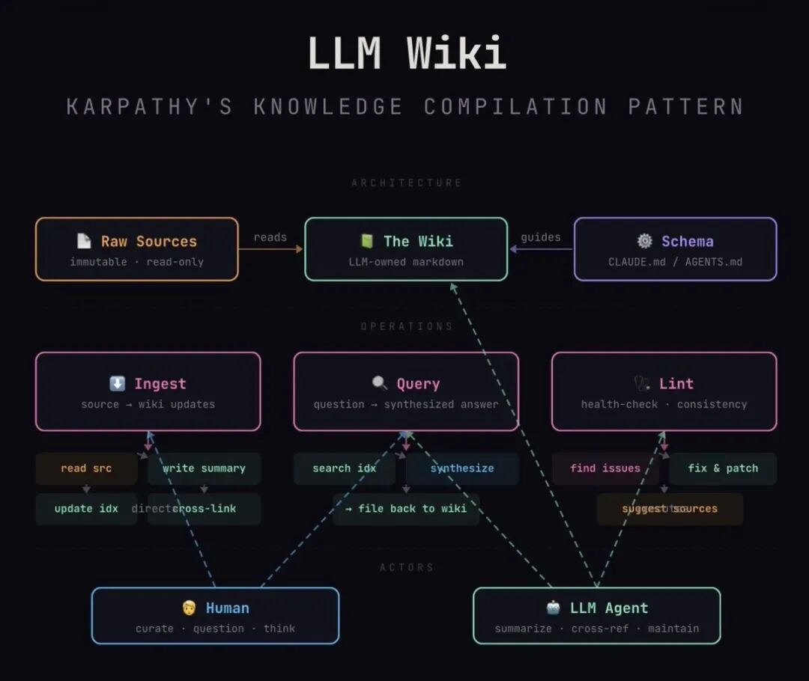
人负责选题、判断和思考。
LLM 负责剩下的一切。
◇ ◆ ◇
相关链接：
https://gist.github.com/karpathy/442a6bf555914893e9891c11519de94f
https://x.com/karpathy/status/2039805659525644595
https://x.com/karpathy/status/2040470801506541998
https://x.com/FarzaTV/status/2040563939797504467